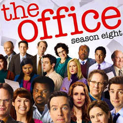

| Home | The Seasons | The Characters | The Reviews |

The Office |
The eighth season of the American television comedy The Office commenced airing on NBC in the United States on September 22, 2011, and concluded on May 10, 2012, consisting of 24 episodes. The series is an American adaptation of the British comedy series of the same name, and is presented in a mockumentary format, portraying the daily lives of office employees in the Scranton, Pennsylvania branch of the fictitiousDunder Mifflin Paper Company. The eighth season of The Office aired on Thursdays at 9:00 p.m. (Eastern) in the United States as part of the "Comedy Night Done Right" television block. This was the first season without Steve Carell as Michael Scott in the lead role and the only one to not feature the character in any capacity.
The eighth season largely centers on Andy Bernard's (Ed Helms) ascension to regional manager, as well as the antics of Robert California (James Spader), the new CEO of Sabre, a fictional printer company that owns Dunder Mifflin. Halfway through the season, Dwight Schrute (Rainn Wilson)—along with Jim Halpert (John Krasinski), Stanley Hudson (Leslie David Baker), Ryan Howard (B. J. Novak), Erin Hannon (Ellie Kemper), and Cathy (Lindsey Broad)—travel to Florida to help set up a Sabre Store, where Nellie Bertram (Catherine Tate) is introduced. Eventually, former CFO of Dunder Mifflin David Wallace (Andy Buckley) buys back the company, firing California.
Despite debuting with moderate viewing figures, the departure of Carell affected the show's ratings, which fell as the season progressed. The season ranked as the eighty-seventh most watched television series during the 2011–12 television year and saw a dramatic decrease in ratings from the previous season. Critical reception was mixed; many critics had previously said the series should have ended after the departure of Carell and thus criticized the recycled storylines. Other critics were more positive, commenting on various actors and their characters. It marked the first time since season one that the show did not receive anyEmmy nominations.